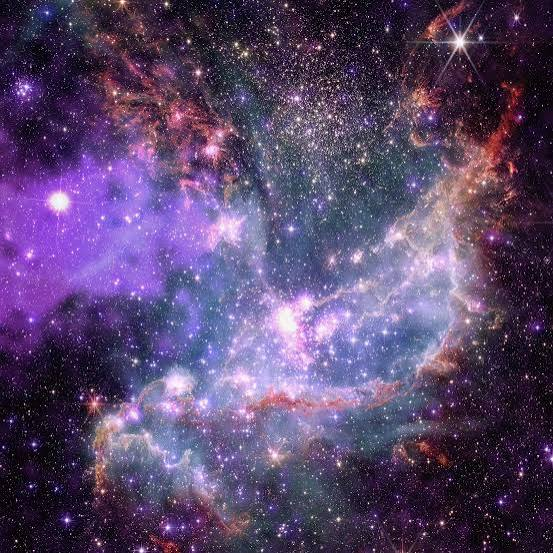

El universo
El universo comprende el espacio, el tiempo, la materia y la energía. En él existen galaxias, estrellas, planetas, nebulosas y muchos otros objetos celestes.

¿Puede existir vida fuera de la Tierra?
La ciencia investiga esta posibilidad estudiando lugares donde podrían existir condiciones adecuadas para la vida. Hasta ahora, la vida conocida se encuentra en la Tierra y no se ha confirmado vida extraterrestre.
El sistema solar
El sistema solar está formado por el Sol y los objetos que permanecen ligados a su gravedad, incluidos ocho planetas.
Zonas habitables
Se llama zona habitable a la región alrededor de una estrella donde, bajo condiciones adecuadas, podría existir agua líquida en la superficie de un planeta. Estar en esa zona no garantiza que haya vida.